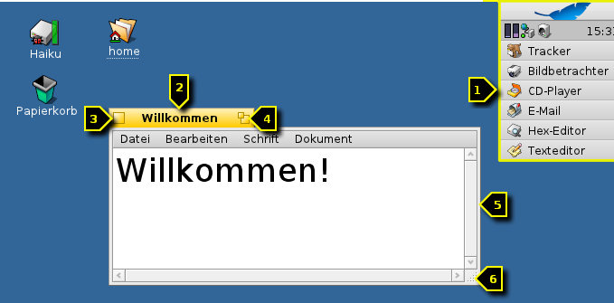
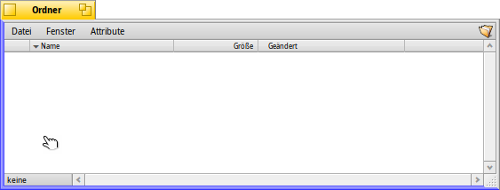
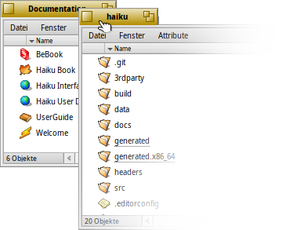
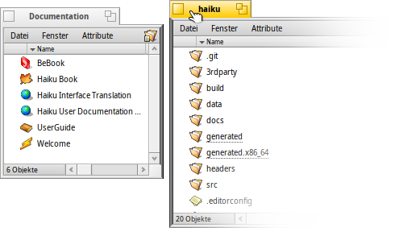
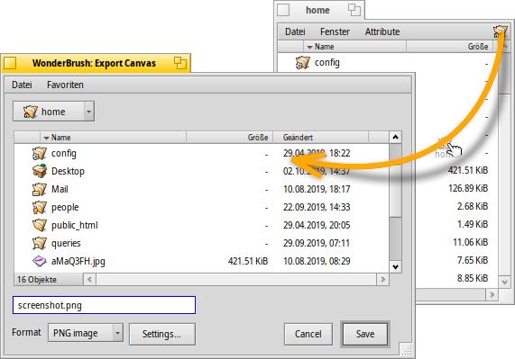
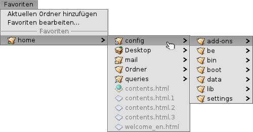

Deutsch
Deutsch Français
Français Italiano
Italiano Русский
Русский Español
Español Svenska
Svenska 日本語
日本語 Українська
Українська 中文 ［中文］
中文 ［中文］ Português
Português Suomi
Suomi Slovenčina
Slovenčina English
English| Index |
|
Bequem Fenstergröße und -position ändern Stack & Tile Dialoge zum Öffnen und Speichern Replikanten |
Haikus Benutzeroberfläche
Haikus grafische Benutzeroberfläche ist ein fundamentaler Bestandteil des Systems. Anders als bei Unix-basierten Systemen gibt es keinen getrennten Fenstermanager, und nur in eine Konsole hochfahren ist nicht möglich. Weil sich Haiku ganz auf den Desktop-Nutzer konzentriert, ist dies einfach nicht nötig.
Weil die meisten wohl schon Erfahrung mit anderen grafischen Benutzeroberflächen haben, überspringen wir mal die Standards wie Menüs, Rechtsklick Kontextmenüs, Drag&Drop etc. Konzentrieren wir uns stattdessen auf die paar Besonderheiten der Haiku Oberfläche.
Haikus GUI ist ziemlich selbst erklärend; nur wenige Dinge bedürfen einer weiteren Erläuterung.
Die Deskbar ist sozusagen Haikus "Start" Menü und Taskbar, siehe Deskbar.
- Der gelbe Reiter zeigt mehr als den Programm- oder Dateinamen:
- Er lässt sich verschieben, indem man die SHIFT Taste gedrückt hält, während man ihn an eine andere Position zieht. So lassen sich einige Fenster hintereinander anordnen, und bleiben durch ihre beschrifteten Reiter einfach erreichbar.
- Durch einen Doppelklick auf den Reiter werden Fenster minimiert (oder per STRG ALT M). Auf ein so minimiertes Fenster kann über dessen Eintrag in der Deskbar oder dem Twitcher zugegriffen werden.
- Ein Rechtsklick auf den Reiter eines Fensters (oder dessen Rahmen) schickt es in der Hierarchie offener Fenster ganz nach hinten.
Der Button zum Fenster schließen.
Der "Zoom" Button (auch durch STRG ALT Z). Die meisten Anwendungen ziehen damit ihr Fenster auf die Maximalgröße auf. Das muss aber nicht immer sein. Tracker-Fenster etwa, ändern sich so, dass der Inhalt optimal dargestellt wird.
Die Ecke zum Ändern der Fenstergröße. Zieht man irgendwo anders am Rahmen eines Fensters, verschiebt man es stattdessen.
 Bequem Fenstergröße und -position ändern
Bequem Fenstergröße und -position ändern
Arbeitet man mit mehreren Anwendungen gleichzeitig müssen oft Fenster verschoben oder in der Größe verändert werden. Es gibt dafür einen bequemeren Weg als auf die kleinen gelben Reiter zu zielen oder auf die noch kleineren Fensterrahmen. Und zu seiner geringen Größe kommt bei der Ecke noch dazu, dass man die Fenstergröße nur hier und auch nur in Richtung rechts und unten ändern kann.
Haikus Lösung ist die Einführung des Tastenkürzels STRG ALT in Kombination mit der Maus. Siehe dazu auch das Kapitel Tastaturkürzel und Tastenkombinationen für weitere Kürzel zum Fenstermanagement.
Wird STRG ALT gehalten, färben sich die dem Mauszeiger nächstgelegenen Fensterrahmen. Bewegt man die Maus in die Nähe eines anderen Rahmens, ändert sich das Ziel der Aktion entsprechend. Klickt und zieht man nun die Maus mit der rechten Maustaste, wird das Fenster entlang der eingefärbten Seite(n) vergrößert oder verkleinert.
Hält man STRG ALT und klickt mit der linken Maustaste irgendwo in ein Fenster, kann man es verschieben. Ein kurzer Klick mit der rechten Maustaste schickt das Fenster in den Hintergrund.
Stack & Tile
Haiku's user interface provides a unique feature that puts the fact that windows have a yellow tab instead of a full-width title bar to perfect use. It's called "Stack & Tile".
In the example below, a Tracker window with bookmarks is tiled to the left of a WebPositive window, which itself is stacked with another Tracker window showing the source folder haiku. In this animation, the user clicks on the tabs of the stacked windows to alternately bring one or the other to the front.
Connected like this, the group of windows can be moved and resized together - a nice arrangement to work in a more project centric environment. Instead of looking for the right browser window with documentation, editor and Tracker windows and maybe a related email concerning one project you are currently working on, just stack&tile them together.
Doing the actual arranging of windows is easy: Hold down OPT while dragging a window by its tab close to another window's tab or border until it's highlighted and release the mouse button.
Stack & Tile consists of two related parts.
|  | "Stacking" is putting windows on top of each other, automatically moving the yellow tabs into position. |
|  | "Tiling" means gluing windows horizontally or vertically together. |
Separation is done in the same way, by holding OPT while dragging a window by its tab out of the group.
Dialoge zum Öffnen und Speichern
Öffnet oder speichert man eine Datei in irgendeiner Anwendung, erscheint so ein Dialog:
Er besteht aus den üblichen Dingen: Eine Auswahlliste aller Dateien des aktuellen Ordners, ein Textfeld um einen Dateinamen einzugeben und ein Menü für unterschiedliche Dateiformate und deren Einstellungen.
Zum übergeordneten Verzeichnis gelangt man mit dem Pop-up Menü über der Dateiliste.
Ist bereits ein Tracker-Fenster mit dem gewünschten Ort offen, kann man einfach irgendeine Datei von dort oder das Ordnersymbol oben rechts in der Menüleiste in den Dialog ziehen. Dadurch springt der Dialog zu diesem neuen Ort.
Keyboard shortcuts
Many shortcuts in open and save panels are the same used in Tracker. Besides the commands that are also available through the menu, there are a few not that obvious:
| ALT N | Erstellt einen neuen Ordner. | |
| ALT E | Benennt das ausgewählte Objekt um. | |
| ALT ↑ | Wechselt in das übergeordnete Verzeichnis. | |
| ALT ↓ or RETURN | Wechselt in das ausgewählte Verzeichnis. | |
| ALT D | Wechselt zum Desktop. | |
| ALT H | Wechselt zum Home Verzeichnis. |
Favoriten und kürzlich verwendete Ordner
In Öffnen- und Speicherdialogen bietet das Menü kürzlich besuchte Ordner und bevorzugte Speicherorte, die man selbst einrichten kann. Wie durch den kleinen Pfeil erkennbar, lassen sich diese Orte auch als Ausgangspunkt zum weiteren Navigieren in der Hierarchie nutzen.
Um einen Favoriten hinzuzufügen, klickt man sich einfach zu seinem Ziel durch und wählt dann . Er erscheint von nun an in jedem Öffnen/Speichern Dialog. Möchte man ihn wieder entfernen, wählt man und löscht den entsprechenden Eintrag.
Alle Favoriten befinden sich in /boot/Benutzer/Konfiguration/settings/Tracker/Go/.
Man kann Verknüpfungen zu Dateien und Ordnern also auch dort direkt anlegen und entfernen.
Replikanten
Replikanten sind kleine autarke Module von Anwendungen, die in andere Programme integriert werden können. Sofern Deskbars Option aktiviert ist, erkennt man "replizierbare" Teile einer Anwendung durch ein kleines Symbol, normalerweise rechts unten:

Das nächstgelegene Objekt, das Replikanten aufnehmen kann, ist der Desktop: Man lässt einfach das kleine Symbol per Drag&Drop darauf fallen. Ab sofort ist es ein Teil des Desktops und die ursprüngliche Anwendung muss nicht mehr laufen damit es funktioniert.
Ein Rechtsklick auf ein Replikanten-Symbol öffnet ein Kontextmenü, um das Fenster der ursprünglichen Anwendung anzuzeigen und zum Entfernen den Befehl .
Beispiele replizierbarer Anwendungen sind die Anzeigen vom Systemmanager, die Arbeitsflächen App oder der Rechner.